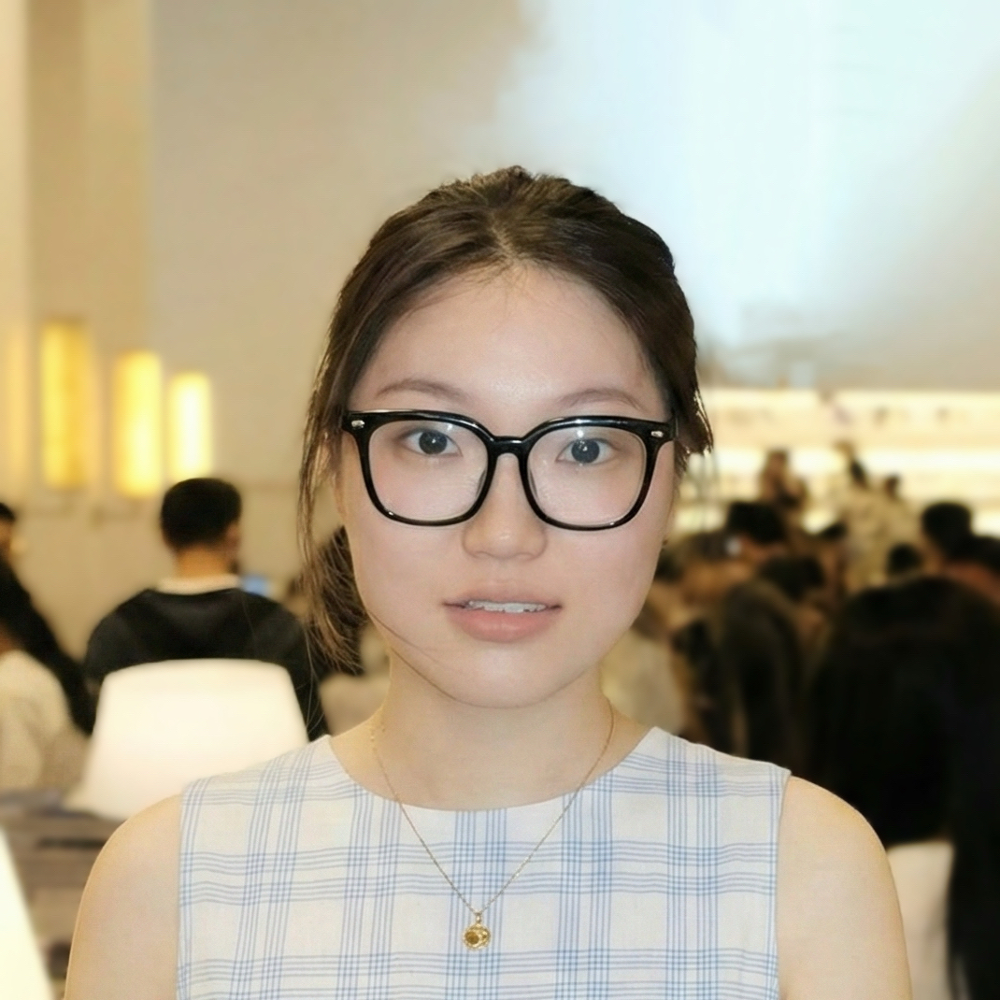

I'm a first-year Software Engineering PhD at the University of California, Irvine, advised by Dr. Daye Nam. Previously, I earned my Bachelor's degree from Nanjing University.
I'm interested in research at the intersection of artificial intelligence (AI), human-computer interaction (HCI), and software engineering (SE). Now I'm working on building tools to enhance human-ai collaboration.
Feel free to have a chat with me using this link.